BLE Protocol
Bluetooth Low Energy
低功耗蓝牙BLE是一种2.4G无线技术，始于蓝牙V4.0版本，旨在实现低功耗和短距离的通信。
实战：选择一款芯片对照SDK Demo开发。重点关注 GATT/GAP/ATT。重点理解 广播 - 连接 - 服务/特征/描述 - UUID
深化：研究开源栈（Zephyr/NimBLE）源码，理解协议栈实现细节
核心开发逻辑：初始化蓝牙协议栈 - 配置广播(GAP) - 服务、特征值、数据收发回调函数(GATT) - 低功耗管理
所谓开发蓝牙应用程序，其实就是开发 service 和 characteristic。通过API，添加自己需要的characteristic 和 service，一个蓝牙设备就诞生了。
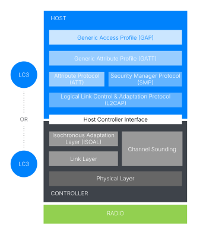
Function of Layer
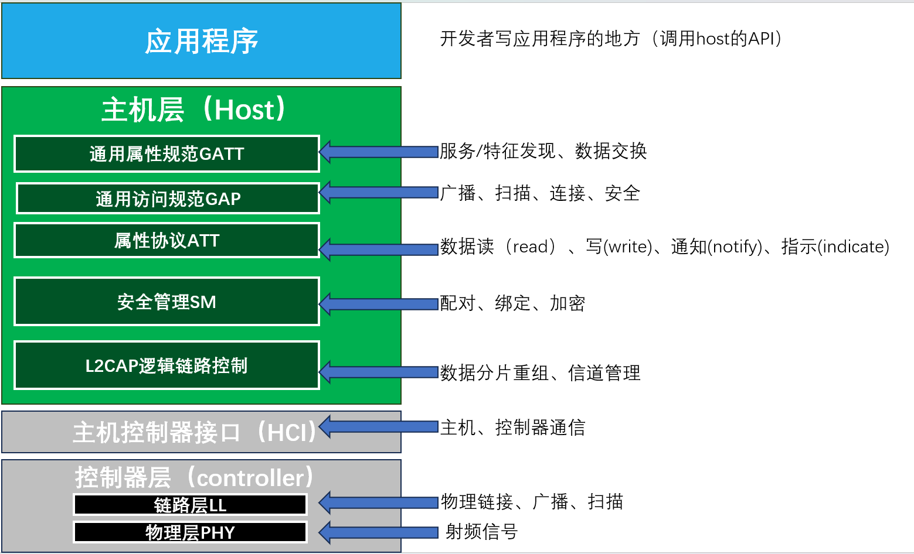
GATT（通用属性规范）
根据属性表中的基础属性定义称为服务、特征和描述符的高级数据类型。定义使用ATT处理属性表的高级过程。
通用属性概要（GATT）基于属性表中保存的属性定义了更高级的数据类型。这些数据类型称为 “服务”、“特征”、“描述符”。它还定义了通过属性协议（ATT）使用这些数据类型所涉及的一系列程序。应用程序通常会使用与这些程序相对应的平台 API 来进行操作。
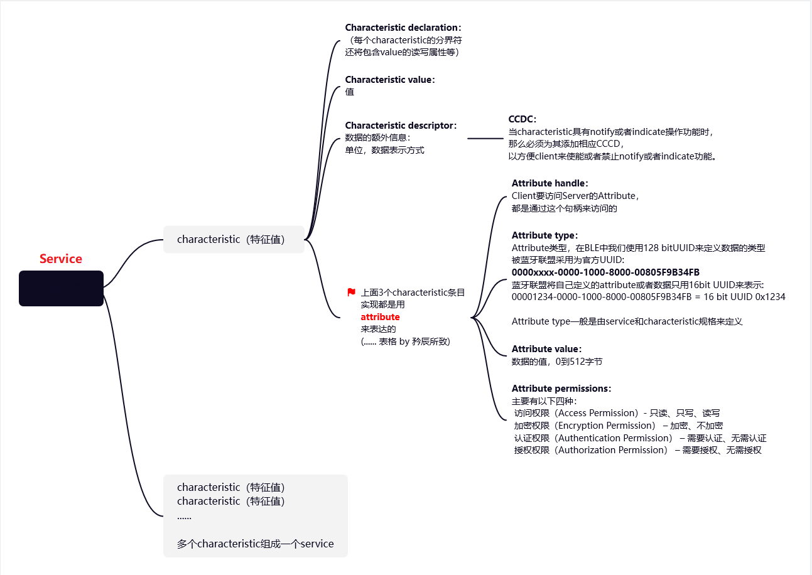
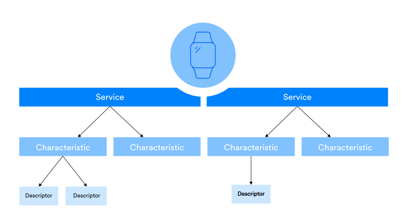
-
Services（服务）是一种分组机制，它为利用其所包含的特定特性并具有明确类型的内容提供了一个环境。通常，服务对应于设备的一个主要功能或能力。
-
Characteristics（特征）是状态数据的个体项，具有类型、关联值以及一组属性，这些属性说明了在相关 GATT 程序集的框架下如何使用这些数据。例如，可以定义为：连接的对等设备可以读取特定特性的值，但不能对其进行写入操作。
-
Descriptors（描述符）属于某些特性，并且可以包含诸如针对该特性的文本描述之类的元数据，或者可能提供一些控制该特性行为的方法。特性可以附带零个或多个描述符。例如，GATT 定义了一个名为“特征值通知”的操作，该操作涉及设备异步地向连接的对等设备发送包含特征值的 ATT 数据包，并且不需要对方设备的响应。如果一个特性支持通知，则通常会在特征值发生变化时或按照定时器控制的方式定期发送通知。但只有在对等设备请求时才会发送通知，这是通过在特定类型的描述符（称为“客户端特征配置描述符”）中设置一个标志来实现的，如果特性支持通知，则必须具有该描述符。
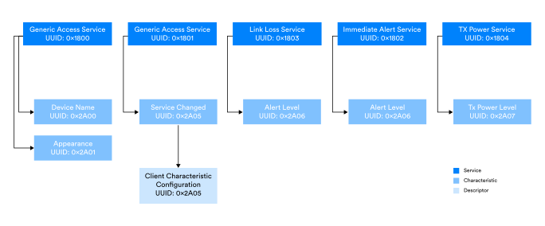
UUID
一些服务、特征和描述符是由蓝牙SIG定义的，并且具有标识其类型的16位UUID值。每种定义类型的蓝牙SIG列表可从规格/分配号码中获得。实现者可以购买16位uid和其他类型的分配号码
可以定义自定义服务、特征和描述符。自定义服务、特征和描述符可以由实现者分配的128位UUID值标识，也可以由实现者从蓝牙SIG购买16位UUID值。16位UUID也有一个等价的128位值，格式为0000XXXX-0000-1000-8000-00805F9B34FB，其中XXXX是16位UUID值。实现者不能在这个范围内使用UUID，除非UUID是从蓝牙SIG购买的。
图示为一个GATT服务器，它混合了蓝牙SIG定义的GATT属性和包含单个自定义特性的单个自定义服务。该自定义服务称为近距离监控服务，UUID类型标识值为0x 3E099910-293F-11E4-93BD-AFD0FE6D1DFD。其特性称为客户端邻近特性，UUID值为0x 3E099911-293F-11E4-93BD-AFD0FE6D1DFD。
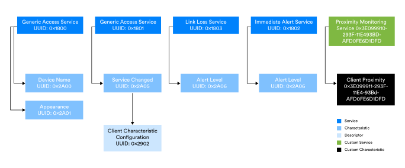
Procedures
GATT 标准中定义了涵盖服务发现、特征发现、描述符发现、读取和写入特征值以及通知和指示特征值等内容的程序。此外，GATT 规范还提供了其程序与底层 ATT 协议之间的明确映射关系，这些程序必须遵循该协议。
参考资料
GAP（通用访问规范）
规定了在非连接状态下可采用的操作模式和操作流程，例如如何利用广播进行无连接通信以及如何进行设备发现。还规定了安全级别和模式。还规定了一些用户界面标准。
蓝牙核心规范的通用访问配置文件（GAP）部分定义了与设备发现和在两个设备之间建立连接有关的过程。一般情况下如何进行数据的无连接通信，如何使用周期性广告以及如何设置同步通信也是GAP所涵盖的主题。
广播包的传输和通过扫描的接收是GAP运作的核心。有许多不同的广告和扫描数据包类型，它们是由链路层定义的。需要注意的是，载荷字段称为AdvData，并不是在所有PDU类型中都存在该字段。当它存在时，它所包含的数据被编码为一系列一个或多个长度/标记/值结构，称为AD类型。
应该注意的是，虽然像广告和扫描这样的活动与GAP具有中心相关性，但这些过程实际上是由链路层执行的，所涉及的PDU类型也是如此
AD CommonData Types
Assigned_Numbers - 2.3 CommonDataTypes
Roles
-
Broadcaster
一种利用某种形式的广告来以无连接方式传输数据的设备。这包括传统广告、扩展广告和周期性广告。广播者还可以传输广播同步流。广播者拥有发射器，但接收器并非必须配备。广播者不会接受中央设备的连接（除非它同时也在执行外围设备的角色）。
-
Observer
一个观察者会接收广告数据包或广播同步流数据包。它不会与其他设备进行连接，包含一个接收器，可能还包含一个发射器。该观察者能够以无连接的方式接收广播数据。
-
Peripheral
外围设备可以通过中央设备连接。它包含一个发射器和一个接收器。
-
Central
中央设备能够主动建立与外围设备的连接。它包含一个发射器和一个接收器。
Discovery
广播设备或外围设备要么处于不可发现模式，要么处于 GAP 定义的两种可发现模式之一。在不可发现模式下进行广告时，传输的数据包会在空中可见（这并非一项安全功能），但执行通用可发现流程或有限可发现流程的扫描设备将忽略这些数据包。
可发现设备可以处于 “一般可发现模式” 或 “有限可发现模式”。当处于一般可发现模式时，设备可被发现的时间不确定，而在有限可发现模式下，设备可被发现的时间最多为三分钟。 当中心设备或观察者设备试图发现其他设备时，它可以使用被动扫描或主动扫描。两者中的哪一种被允许取决于设备是试图以一般可发现模式还是有限可发现模式发现设备。
被动扫描是指仅接收广告数据包，而不发送任何扫描数据包。主动扫描则是指接收广告数据包，并通过发送扫描数据包来请求获取更多信息。
广播设备可以通过所使用的PDU（传统广播）或AdvMode字段的值（扩展广播）来指示自己是否可以被连接。
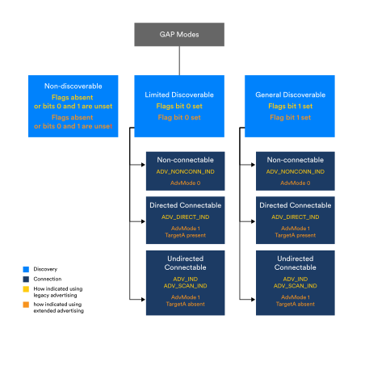
ADV_TYPE
-
ADV_IND（可连接可扫描非定向广播）
主要用于等待被连接的设备（如蓝牙手环、串口模块），一旦被其他设备发起连接，广播会立即停止，无法持续传输数据，仅作为连接前的信息附带。
-
ADV_DIRECT_IND（可连接可扫描定向广播）
仅用于和已配对设备的快速重连，几乎不携带业务数据，完全不适合广播数据传输。
-
ADV_SCAN_IND（不可连接、可扫描、非定向广播）
不可连接，但支持响应扫描器的SCAN_REQ请求，额外回复 1 个SCAN_RSP扫描响应包。
-
ADV_NONCONN_IND（不可连接、不可扫描、非定向广播）
纯单向广播，不响应任何扫描请求，也不接受连接请求；每个广播事件仅发送 1 个广播包，无额外交互。
ATT（属性协议）
ATT客户端和ATT服务器使用的一种协议，它允许发现和使用服务器属性表中的数据。
ATT由两个设备使用，一个作为客户端，另一个作为服务器。服务器公开一系列称为属性的复合数据项。属性由服务器组织在一个称为属性表(attribute_table)的索引列表中。
每个属性(attribute)包含一个句柄(attribute_handle)、一个值(attribute_value)、一组权限(attribute_permission)和一个通用唯一标识符（UUID）。
ATT客户端使用ATT来发现ATT服务器中属性表的详细信息，包括感兴趣的属性或属性类型的句柄值。当句柄值已知时，它们可以与某些PDU类型一起使用，以识别表中的特定属性，然后对其进行操作。
例如，ATT_READ_BY_GROUP_TYPE_REQ PDU可用于查找主服务定义中所有属性的句柄和UUID。一种更简短的表达方式是，ATT_READ_BY_GROUP_TYPE_REQ PDU可以用来查找属性表定义的所有GATT主服务。当使用支持发现操作的pdu（如ATT_READ_BY_GROUP_TYPE_REQ）时，指定句柄范围并指示要搜索的属性表中条目的子集（这可能是整个表）和要查找的属性类型。
Attribute PDU
命令(Command)，客户端发送给服务端，不要求服务端回复
请求(Requests)，客户端发送给服务端，要求服务端回复
响应(Responses)，客户端发送了一个请求，服务端用此响应
通知(Notifications)，服务端发给客户端的数据，不要求客户端回复
指示(Indications)，服务端发给客户端的数据，要求客户端回复
确认(Confirmations)，服务端发给客户端的数据，客户端用此进行回复
-
Commands
-
Requests and Responses
ATT请求PDU由客户端发送给服务器。服务器应该在30秒内回复一个相应类型的响应PDU或一个错误响应PDU （ATT_ERROR_RSP）。未能在30秒内响应将构成超时。
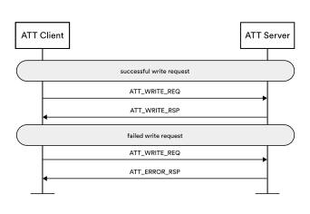
-
Notifications
通知是由服务器发送给客户机的类型为ATT_HANDLE_VALUE_NTF的未经请求的pdu。没有定义应答PDU。
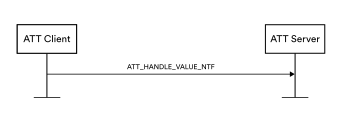
-
Indications and Confirmations
ATT指示PDU由服务器发送给客户端。客户端应在30秒内回复一个相应类型的确认PDU或一个错误响应PDU （ATT_ERROR_RSP）。未能在30秒内响应将构成超时。
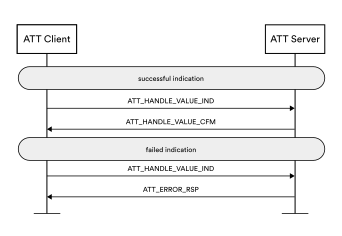
参考资料
SMP（安全管理协议）
在执行安全过程（如配对）期间使用的一种协议。
安全管理器协议（SMP）是堆栈的安全管理器组件的一部分。它支持执行与安全相关的过程，如配对、绑定和密钥分发。
安全管理器组件为其他层可以使用的安全功能提供了一个加密工具箱，并定义了配对算法。
L2CAP（逻辑链路控制协议）
L2CAP负责协议多路复用、流量控制、业务数据单元sdu的分段和重组
充当Host Layer的协议多路复用器，确保协议由适当的主机组件提供服务。在L2CAP上下层之间对 PDU/SDU 进行分段和重组。
-
Protocol Multiplexing 协议复用
L2CAP之上的层使用不同的协议，如属性协议（ATT）和安全管理协议（SMP）。L2CAP协议多路复用确保将sdu从堆栈向上传递到适当的层进行处理。
-
Flow Control 流量控制
流量控制关注的是确保堆栈中的一层产生数据包的速率不超过同一堆栈中的另一层或远程设备上处理这些数据包的速率。（即控制入栈速度小于出栈速度，避免溢出）如果没有流量控制，就有出现缓冲区溢出等问题的风险。
-
Segmentation and Reassembly 分段和重组
L2CAP以上和以下的层都受最大传输单元（Maximum Transmission Unit， MTU）大小的限制，该大小规定了该层创建的PDU类型所允许的最大大小。例如，ATT_MTU参数定义了ATT PDU的最大大小。
L2CAP本身和它上面或下面的层在堆栈中可能有不同的MTU大小，因此，可能有必要将一些 pdu / sdu分成一系列相邻层可以处理的较小的部分，或者相反，将一系列相关的较小的部分重新组装成完整的 pdu / sdu
HCI（主机控制器接口）
为主机组件和控制器之间的命令和数据的双向通信提供定义良好的功能接口。
HCI表示Host与Controller之间的逻辑接口，但不是物理组件。就底层物理传输而言，HCI可以以多种不同的方式实现，但逻辑或功能接口总是相同的。
值得注意的是，蓝牙LE栈跨越了OSI参考模型的所有层，而许多其他无线系统只跨越了OSI层的一个子集，例如物理层和数据链路层。作为全栈通信系统，蓝牙技术的一个优势是不依赖于其他标准体。这种依赖关系会限制技术的发展。
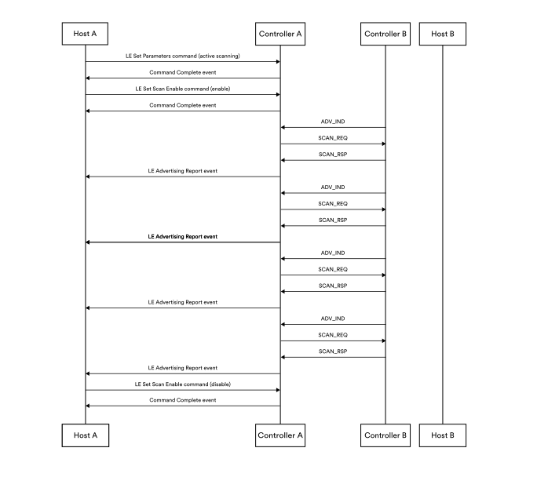